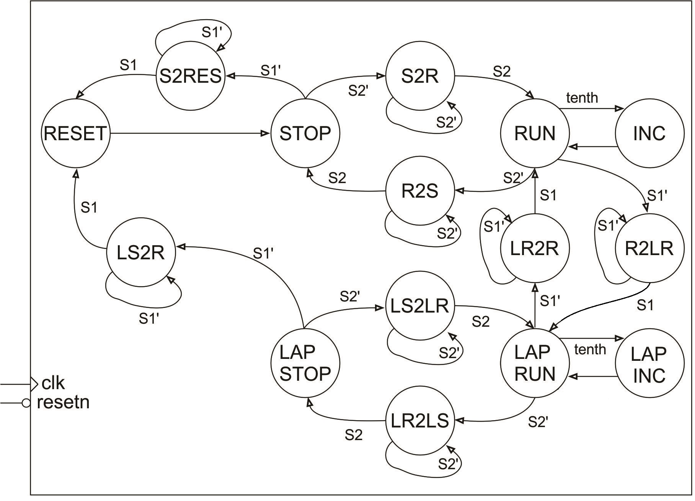
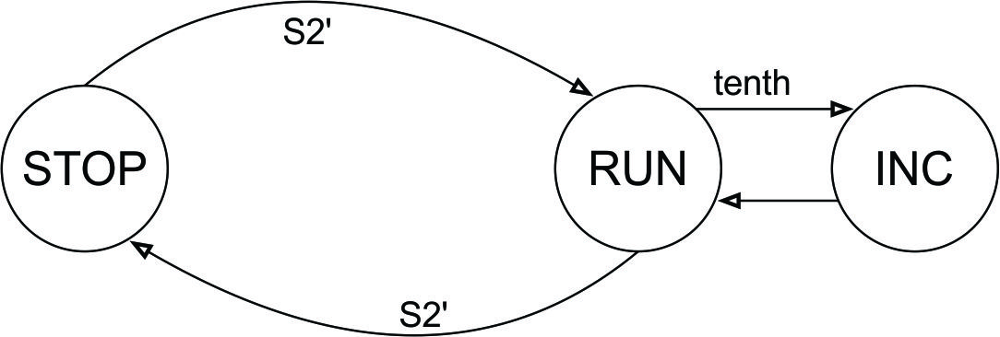

| Lecture | 16 |
| Code | stopWatch_fsm.vhd |
| Handout | stopWatchControlUnit.pdf |
| Class Objectives | Understand how to convert a state diagram into VHDL. |
The Stopwatch
A stopwatch is a device that is used to measure time intervals, usually in competitive events. The stopwatch that you will be designing gets its input from two buttons. The stopwatch will measure down to a 1/10th of a second. The time will be displayed using 3 digits which will represent tenths of a second, unit second and tens of seconds. As a result, the stopwatch is limited to measuring intervals of time from 0.1 second to 99.9 seconds.The stopwatch’s behavior is dictated by its 2 buttons called S1 and S2 according to the finite state machine shown in Figure 1.

To make sense out of the FSM shown above, its helpful to imagine timing a 4-person relay race. In this race, each athlete runs one lap and then pass a baton to the next runner. The time required for a runner to complete one lap is called their split time. In order to measure each runner’s split time, you need to be able to stop the displayed time while allowing the stopwatch to continue to run its internal timer. This is called a lap feature. Let’s explore how the lap feature works by timing the mile relay at a Mines track meet. As we go through this scenario, reference the finite state machine in the figure above.
Prior to the start of the race, you push button S1 putting the stopwatch into the RESET state. This clears the internal timer and the displayed time. The stopwatch automatically goes back to the STOP state. You are ready for the start of the race. You are ready when the gun goes off and immediately press button S2 putting the stopwatch into the RUN state. The internal timer is keeping track of the elapsed time and you this the displayed time changing to reflect the internal timer. As soon as the first runner who is finishing their lap hands the baton to the second runner, you press button S1 putting the stopwatch into the LAP RUN state. This causes the displayed time to stop, showing the time at the instant you pressed button S1, while simultaneously allowing the internal timer to keep running. The internal timer is now keeping track of the elapsed time since the start of the race. You calmly write down the displayed time on your clip board (made easier because it is not changing) and then press button S1 putting the stopwatch back into the RUN state. You repeat this process until the last runner comes in. As soon as they do, you press button S2 stopping the internal timer and showing the time the last runner crossed the finish line.
In this scenario we did not put the stopwatch into the LAP STOP state – this state would stop the internal timer and keep the displayed time the moment the S1 button was pressed when the stopwatch was in the RUN state. To summarize:
- RESET – Reset the internal and displayed time values.
- STOP – Stop the internal timer and hold the displayed time value.
- RUN – Run the internal timer and update the displayed time.
- LAP RUN – Run the internal timer and hold the displayed time.
- LAP STOP – Stop the internal timer and hold the displayed time.
The Stopwatch State Diagram
The arcs between states are labeled with a Boolean condition, which when true, causes the FSM to make that transition. So for example, if the FSM is in the RUN state and the S2 button is pressed (buttons output 0 when pressed hence the arc labeled S2’), the FSM will transition to the R2S state (and stay there as long as the button is held down). When a number “2” appears in the middle of a state name, the number denotes the word “to” which is intended to mean moving from one state to another. The abbreviated names of the source/destination states are written on left/right side of the number “2” respectively. So for example, the state R2S stands for Run to Stop. These intermediate states are needed because the action of a user pressing a button takes a long time from the perspective of the 50MHz clock on the ALINX board. For example, consider the incorrectly designed FSM shown in Figure 4. The intention of this design is to have the FSM transition from the STOP state to the RUN state when the user pressed the button S2 (remember that when S2 is pressed it outputs a logic 0, hence the arc labeled S2’). What actually happens is that the FSM rapidly toggles between the STOP and RUN states at 50MHz while the S2 button is held down. When the user releases the S2 button there is a 50/50 chance that the FSM will end-up in the STOP or RUN state.

Stopwatch VHDL code for next state
The following discussion will cover the control unit VHDL file in sections. The complete code is given at the top of this lecture notes.Control Unit Entity
The entity is pretty straightforward and given in the following code snipped.
library IEEE;
use IEEE.STD_LOGIC_1164.ALL;
use work.stopWatch_package.all;
entity stopWatch_fsm is
PORT ( clk : in STD_LOGIC;
resetn : in STD_LOGIC;
sw: in STD_LOGIC_VECTOR(SW_VECTOR_LENGTH - 1 downto 0);
cw: out STD_LOGIC_VECTOR (CW_VECTOR_LENGTH - 1 downto 0));
end stopWatch_fsm;
Some points to observe:
- The package file contains constants SW_VECTOR_LENGTH and CW_VECTOR_LENGTH. When developing a sophisticated digital circuit you will almost always need to add and remove bits from the control and status word. These two constants allow you to update every occurrence of these values in one place, the package file.
- We will use an active low reset to make the control unit consistent with the reset of the devices we are using.
Control Unit Signals
In order to make the logic of the FSM more readable, we need to create an enumerated datatype that has the names of the states as the values of the datatype. This declaration is in the package and shown at the top of the following code snippet.
--The following declaration is from the package file
type state_type is ( RESET_STATE, S2RESET_STATE, STOP_STATE, S2R_STATE, RUN_STATE, R2LR_STATE,
R2S_STATE, INC_STATE, LAPINC_STATE, LAPRUN_STATE, LR2R_STATE,
LR2LS_STATE, LAPSTOP_STATE, LS2R_STATE, LS2LR_STATE);
-- The following is from the stopwatch_fsm.vhdl file
architecture Behavioral of stopWatch_fsm is
signal tenth, S1, S2: STD_LOGIC;
signal state: state_type;
begin
tenth <= sw(0);
S1 <= sw(1);
S2 <= sw(2);
Some points to observe:
- The signal state has type state_type and as a result can only have the values given in the state_type declaration given above.
- The first three lines inside the architecture break-out the bits of the status word into a more human friendly format.
Control Unit Next State
Each state in the FSM diagram shown at the top of this lecture note will have a case statement. Inside that case statement you will describe two characteristics of each arc LEAVING that state:- The conditions on the arc
- The state pointed to by the arc.

Now let's work through the logic to describe how you can leave the RUN state using an if/then structure.
if (state = RUN) then
if (tenth = '1') then state = INC
elsif (S2 = '0') then state = R2S
elsif (S1 = '0') then state = R2LR
else state = RUN
endif
You should note that the conditional express in each if/elsif statement
is the condition on the arc leaving the RUN statement. Also the then
clause assigns the state variable the identity of the destination state
of the transition arc.
In VHDL that follows the final else statement isn't needed because we will use a single state variable. Also when you have a single statement inside an if clause you do not need a being/end if combination; this is much like not needing the { or } brackets in C when you have a single statement in a if/then body. Finally, we will use a case/when statement to select the state that we are currently in and then use the if/elsif logic to describe the transition arcs leaving that state.
state_proces: process(clk)
begin
if (rising_edge(clk)) then
if (resetn = '0') then
state <= RESET_STATE;
else
case state is
when RESET_STATE =>
state <= STOP_STATE;
when STOP_STATE =>
if ( S1 = '0') then
state <= S2RESET_STATE;
elsif ( S2 = '0') then
state <= S2R_STATE;
end if;
....
when RUN_STATE =>
if (tenth = '1') then
state <= INC_STATE;
elsif (S1 = '0') then
state <= R2LR_STATE;
elsif (S2 = '0') then
state <= R2S_STATE;
end if;
...
end case;
end if;
end if;
end process;
Control Unit Output
We will examine the output logic given in the code snippet below with little understanding of how the cw values are assigned. This will be the topic of discussion for the next lecture when we examine the datapath.The output_process described below just assigns the control word a value depending on what state the FSM is in. This is 100% consistent with the control unit architecture given in the previous lecture note, where Z, the output, was a function of Q, the current state.
output_process: process (state)
begin
case state is
when RESET_STATE => cw <= "001011";
when S2RESET_STATE => cw <= "000000";
when STOP_STATE => cw <= "000000";
....
end case;
end process;
In your next lecture we will examine how the control word relates
to the datapath, and in doing so, create a language that allows
us to communicate to the datapath. Neat stuff.